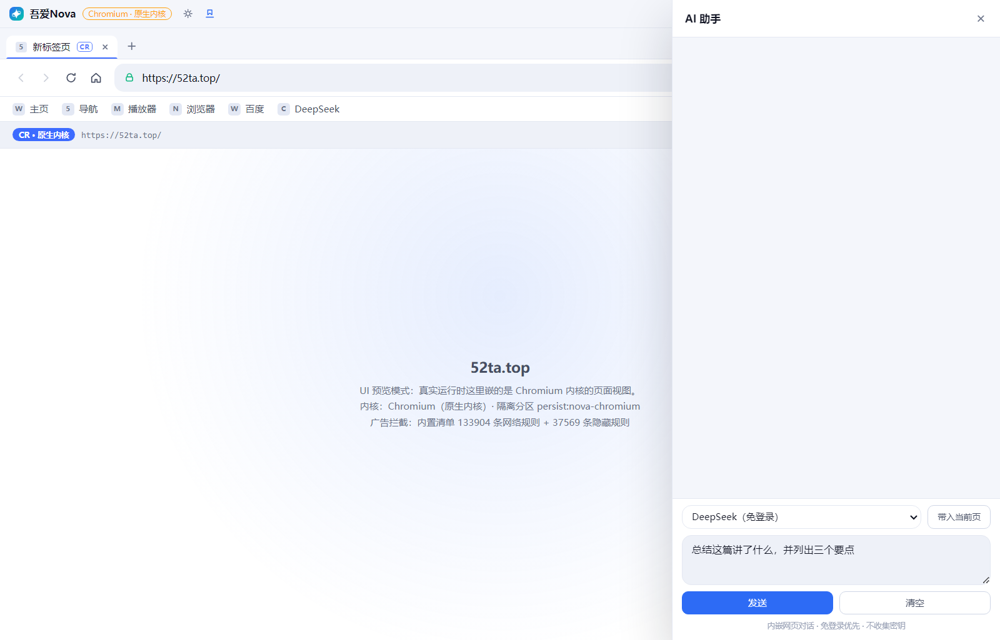
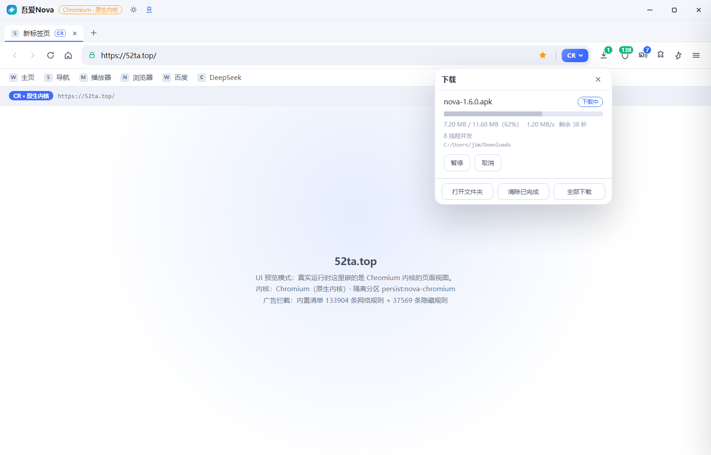
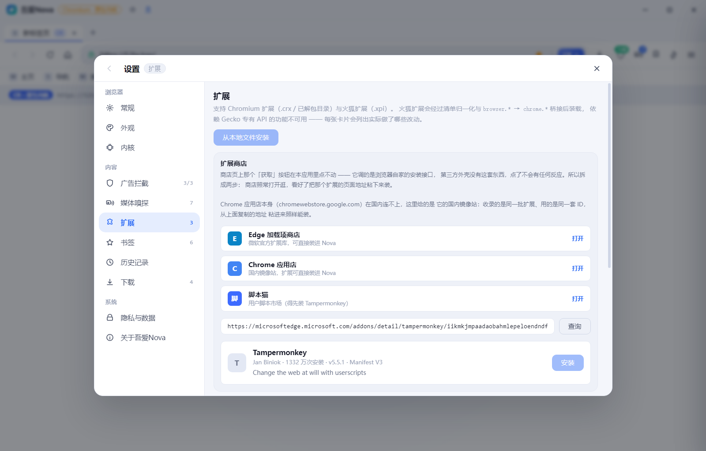
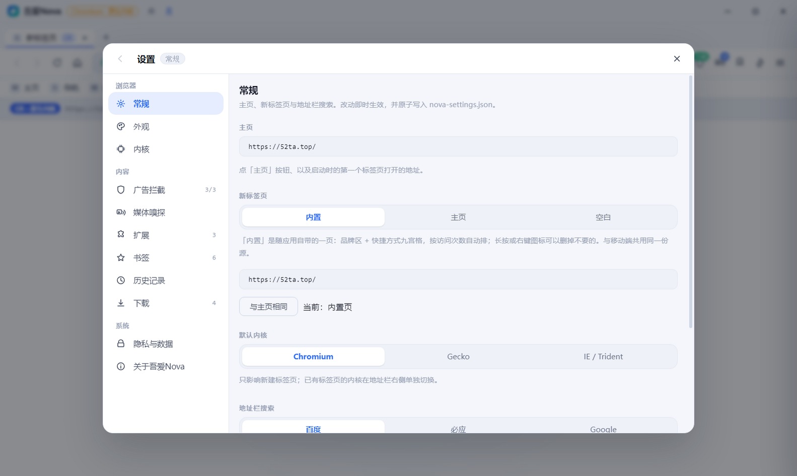
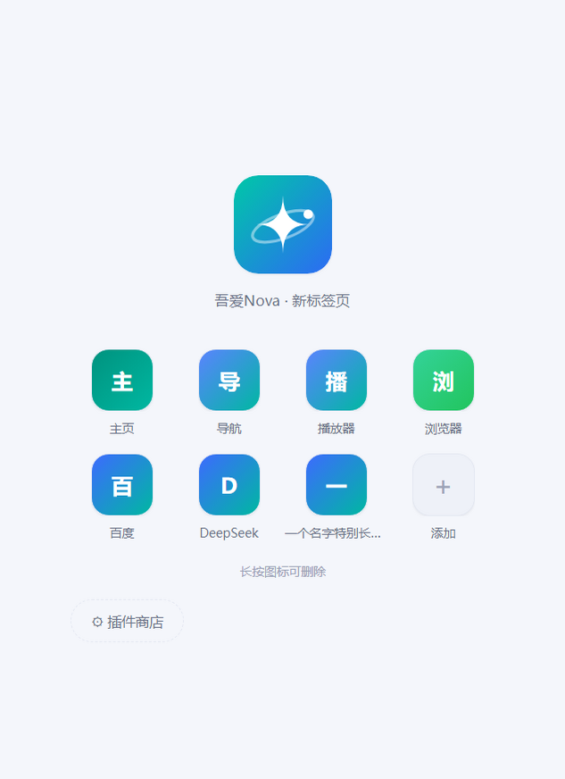
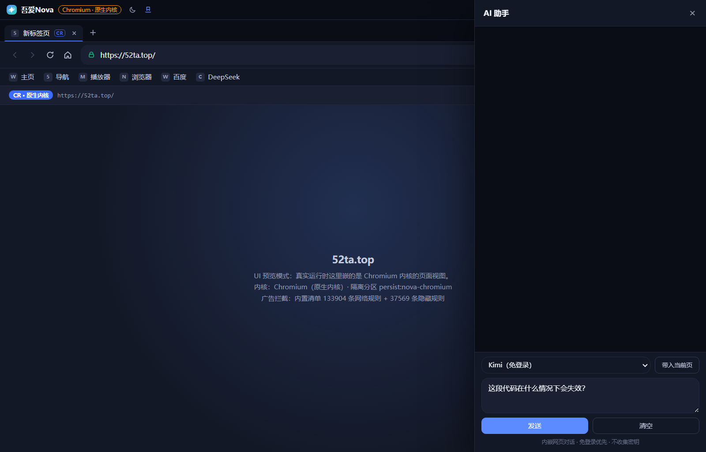

不内置内核的浏览器，
把安装包与内存都省下来
吾爱Nova 是一款同时提供 Windows 桌面版与 Android 手机版的开源浏览器。 两端都不内置浏览器内核：Android 版交由系统 WebView（Chromium）渲染， 桌面版提供原生内核 / 原生宿主 / 兼容层三档渲染路径，由用户在设置中自行选择， 省下的是上百 MB 的下载与一份常驻内存。多线程下载、广告拦截、用户脚本、 无图模式与自动拼页两端均已具备；做不到的部分，在下方逐条写明。
吾爱Nova · 新标签页
核心能力，逐项可验证
每一项能力都对应一段可直接翻阅的实现，测试与代码同步。官网只呈现经过验证的功能，不写做不到的事。
双端多线程下载引擎
基于 Range 分片并行下载，支持断点续传与分片校验。服务器不支持分片时如实退回单线程，实际生效的线程数可在下载详情中查看。
双端广告拦截
网络规则与元素隐藏两级拦截，内置三源规则，支持订阅源自动更新，无需手动维护最新规则。
双端第三方脚本拦截
严格隐私模式：拦下一切非同源的脚本、跟踪像素与第三方资源，默认不把你的浏览行为共享给任何第三方。
双端划词搜索 + 翻译
页面里选中文字即可一键搜索或打开有道翻译（国内可用、免密钥），当前页不丢。
双端网页安全面板
一眼看清当前页的资源构成、SSL 证书状态与本次会话的拦截统计，技术细节不藏私。
双端用户脚本
按网址规则注入用户脚本，行为与 Tampermonkey 类扩展同源；可一键停用。内置「网页限制解除」等口碑脚本，开箱即用。
双端推荐脚本库
按公开装机量精选的脚本清单随包内置，点哪条装哪条；许可允许的那些正文也随包发，断网照样装。装前自动检测脚本能力并如实列出，避免装了跑不起来。
双端无图模式 + 自动拼页
三档控图，验证码与关键缩略图智能放行不误伤；列表页自动拼接下一页，兼顾省流与连续阅读。
双端多标签 · 本地历史
标签总览、切换后还原滚动位置；浏览记录仅存本机，无痕模式下不写入任何记录。
双端应用内自动更新
新版本后台静默下载，界面仅提示「重启更新」。下载包带 sha256 校验，官网直链与 Gitee Releases 双源互为兜底。
PC拖入即装扩展
把下载好的 .crx / .zip / .xpi
直接拖进浏览器窗口即自动安装，不必再翻菜单选文件。火狐扩展会先做清单归一化与
browser.* → chrome.* 桥接，并如实列出做了哪些兼容改动。
PC地址栏旁的下载浮窗
开始下载即在地址栏旁自动弹出，就地看到进度、速度与剩余时间，可暂停、继续或直接打开文件夹。 不想被打扰时手动收起，之后的下载也不会再自动弹出。
PCAI 助手侧边窗口
页面右侧滑出 AI 面板：写好内容、右侧下拉选 AI，结果就在面板里看。 免登录的排在最前（DeepSeek / Kimi / 通义千问 / 豆包），也可自定义地址； 「带入当前页」能把选中文字带进输入框。
PC三档内核可切换
地址栏右端随时切换 Chromium / Gecko / IE(Trident) 运行时，兼容层如实标注。 新标签页自带常用入口与插件商店入口，扩展与收藏夹开箱可用。
标 双端 的能力两端均已具备；标 PC 的为电脑版独有。手机版独有的能力见下方「只有手机版有」一节。
只有手机版有的能力
下列功能依赖触屏交互与系统能力，在电脑版上没有对应物。
Android上划唤出搜索框
在底栏区域向上滑动即唤出胶囊搜索框，地址栏与标签栏同时收起，网页净增一屏高度。任何页面都可触发——包括新标签页这类本身不滚动的页面。
Android星形收藏与收藏夹
地址栏右侧星形按钮一键收藏。收藏夹面板逐条列出，每条显示标题与网址，可点开也可单条删除；支持导出为 JSON，并可直接导入 Chrome / Edge 导出的 HTML。
Android底栏工具箱
下载、阅读模式、翻译、观影、篡改猴、广告拦截、网页安全与收藏夹集中于一格之内；面板右上角直达设置，下拉或轻扫即可关闭。
AndroidAI 助手
顶栏右端常驻入口，内嵌对话窗口，支持下拉切换服务商与输入框直问；免登录的服务排在最前。
重新设计后的界面
配色取自应用图标的蓝绿渐变，与 App 内颜色令牌保持一致。下方界面由代码直接绘制—— 向下滚动时顶栏收起、底栏换为搜索胶囊，按连接分格的下载进度，以及页面顶部下拉刷新，均如实呈现。
两端对照
两端共享同一套核心能力（拦截、下载、脚本、无图），但在扩展生态与交互形态上各有侧重。以下按端列出实际差异，便于判断哪一端更符合你的使用方式。
- 扩展拖入 .crx 即自动安装
- 渲染原生内核 / 原生宿主 / 兼容层 三档可选
- AI侧边窗口，内嵌对话，不打断当前页
- 下载地址栏旁浮窗，按连接分格显示进度
- 内核更新跟随应用，自动更新
- 触屏手势不适用（桌面端无此形态）
- 渲染交由系统 WebView（Chromium），零个 .so
- 上划底栏上划唤出搜索框，任意页面可触发
- 收藏星形一键收藏，面板可导入导出
- 工具底栏工具箱集中八项入口
- 内核更新跟随系统，无法独立升级
- 浏览器扩展不提供；用户脚本与篡改猴独立管理
电脑版的实际界面
以下均为程序真实运行的截图，未做任何修饰。电脑版在扩展生态与窗口形态上更完整 —— 拖入即装扩展、地址栏旁的下载浮窗、AI 侧边窗口与三档渲染路径切换都在这一端。






已知限制与技术取舍
下列各项均标注了实际代价与适用边界。请在使用前确认它们是否符合你的需求——我们认为如实说明局限，比罗列功能更有价值。
取舍为什么不内置内核
Android 版安装包不足 400 KB，是因为 APK 中零个 .so——渲染交由系统 WebView（Chromium）完成。 换来的是极小的体积与更低的内存占用；代价是内核版本跟随系统，无法独立升级。 桌面版同理不内置内核，但体积极大（约 74 MB），因为三档运行时各自携带了一份。 我们认为对多数用户这是值得的取舍，但你应当了解这笔账。
如实桌面端三档运行时的标注
桌面版提供三档渲染路径，由用户在设置中自行选择：原生内核（进程内渲染）、
原生宿主（由独立宿主进程渲染 Gecko / Trident），以及兼容层
（用 Chromium 渲染，但完整伪造目标内核的 UA、文档模式与 API 垫片）。
兼容层不等于真内核——原生宿主二进制不存在时会自动降级为兼容层，
界面如实标注当前实际生效的那一档。扩展方面支持拖入 .crx 自动安装。
如实无图模式的边界
移动端无图按资源后缀判断，覆盖常见图片格式，但并非万无一失—— 验证码与关键内容走放行名单，其余边界在源码注释中逐条注明。设置中的每个开关均真实生效。
取舍下载并行视服务器而定
多线程下载依赖服务器支持 Range 分片。探测到不支持时自动退回单线程并正常完成下载， 不会伪装并行——实际生效的线程数可在下载详情中查看。
下载
两端分别提供安装包，官网直链与 Gitee Releases 内容一致、互为备份，任选其一即可。
Android 手机版
安装包大小约 476 KB。安装前请在系统设置中允许来自此来源的应用。
- 版本1.6.5
- 版本码18
- 更新日期2026-10-15
Windows 电脑版
桌面版约 74 MB，提供 ZIP 压缩包与 EXE 安装程序两种形式，内容完全一致，解压或直接运行均可。 建议优先选 ZIP：部分浏览器会对「直接下载 .exe」弹出「不常下载的文件」风险提示，套一层压缩包后下载这一步更干净。 安装程序未做代码签名，首次运行时 Windows 可能提示「未知发布者」——这是自签包的固有现象，不是文件损坏。
- 版本1.0.12
- 平台Windows x64
- 大小约 74 MB